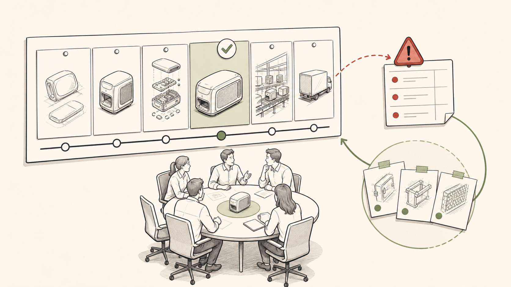

01
Executive Summary
Why the team needs a clearer workflow model.
Stage 1 operating model
A practical card-based system for visible work, clear ownership, better handoffs, and meaningful process improvement.
Prepared for Westfield Outdoors | July 2026
Contents
Why the team needs a clearer workflow model.
The operating logic Trello makes visible.
How cards become readable to people and agents.
What to capture and what to remove.
How milestone feedback becomes board change.
A focused path from workflow definition to operating rhythm.
Executive summary
Industrial Design and Engineering need a simple card-based workflow so active product work is visible, blockers are explicit, and the team can improve from real workflow data.
Diagram 1

Diagram 2

Why this matters
Priorities are visible to some people but not everyone. Ownership is implied. Blockers are discovered late. Status reporting requires reconstruction.
Cards show the next required action, the owner group, the blocker, the decision needed, and what done means for the current stage.
The workflow has to account for CAD, renderings, samples, factory feedback, cost targets, packaging, retailer needs, and leadership decisions.
AI agents can summarize, identify follow-ups, and support reporting only when the board itself is consistent.
Data discipline
Use lists for real work state or owner group, not vague organization.
Use labels for categories, channels, brands, and filters people actually review.
Put source documents, specs, CAD, references, sample photos, and SharePoint links where the work happens.
Capture decisions, blockers, handoff notes, and meaningful updates directly on the card.
Keep them only when they carry structured information that is actively reviewed and cannot be represented more clearly elsewhere.
Work in progress
Early concepting, sketching, and directional exploration can die quickly. That is healthy. The team should not treat every sketch as precious.
Once engineering time, technical packs, CAD, tooling direction, sample work, or factory effort has started, the discipline changes. A sample is evidence: cost, construction, overbuild, underbuild, value-engineering path, and proof for leadership.
Diagram 3

Stage 1 operating model
Agree on real states: not ready, ready, in progress, blocked, review, waiting, done.
Require owner group, next action, blocker, required input, and definition of done.
Prefer lists, labels, attachments, comments, and checklists before custom fields.
Look at active and blocked work regularly with WIP discipline.
Turn retrospective outcomes into board changes, card standards, or follow-up cards.
Diagram 4

Close
The operating model is simple: make the workflow visible, clarify who owns the next action, name blockers directly, and use real evidence to improve the system.
Trello is the current surface. The discipline is the workflow.